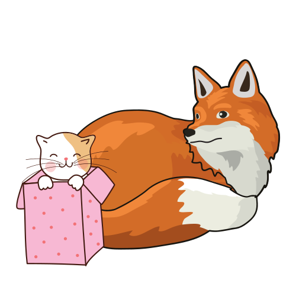

Are you ready to choose your path?
You get to decide which path the character will take as it tries to navigate
the gap between the natural and technological worlds.
Along the road, there will be many obstacles to overcome,
and the path you take will depend on the decisions you make.